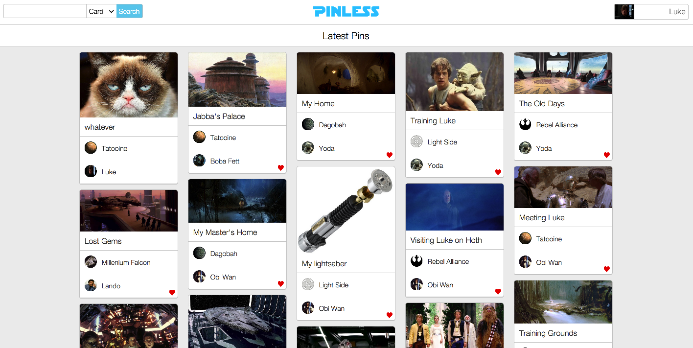

Pinless
A clone of Pintrest, made with RoR and Backbone.js
Users can create accounts by inputting details, or log in through Facebook.
Users can create boards and cards, allowing them to share images.
Boards and Cards can be liked/unliked, and users can be friended/unfriended.
New cards from boards you've liked show up in your main feed.
Friend requests are pushed to users